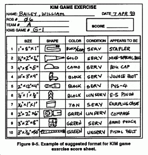
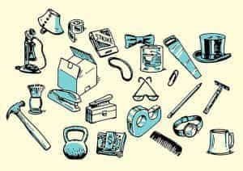

< < < Back
How To Improve Your Situational Awareness From One Minute Of Effort Per Day – Return Of Kings
My job here at Return Of Kings entails teaching you how to improve yourself in physical terms—teaching proper nutrition, exercise techniques, and training regimens. However, the muscles and adipose cells are just two parts of the entity that is you that are capable of training and being made better than they were naturally made.
Many people in this side of the internet advocate things such as meditation as a method of training mind, body and spirit. While I am not as of yet versed in this subject (I’m planning on learning how to meditate at some undisclosed point in my life), I am familiar with a specific kind of mental training—more specifically, a method of training the eyes to “grab” more information than the average man, to train the mind to retain that information, and to train the entire body to have more situational awareness.
This idea has been posited by many people before-such as Bruce Lee in his Tao of Jeet Kune Do advocating “practice in concentrated seeing”—but the method that is most commonly used, including by spies and special forces soldiers to this day, is the time-tested “Kim’s Game”

Typing in “Kim Cover” on Google gets you a lot of Kim Kardashian’s giant Photoshopped ass, and surprisingly little of this classic of English literature
A Literature Lesson
The game has existed for centuries, but the name of it that I am using is taken from the famous Rudyard Kipling novel Kim, in which the game is referred to as the “Jewel Game.” Set in the time of the “Great Game” (that game being imperialism around the Subcontinent and Central Asia) between Great Britain and Tsarist Russia, young Kimball O’Hara is drafted into being a spy for the British Empire by a Sahib who puts up a front of being a jeweler.
Early on in his spy training, Kim and the Sahib’s Indian servant are called into play what the spymaster refers to as the “Jewel Game”: the sahib takes 15-20 jewels and lays them out on a towel, has the two young men look at the jewels for exactly one minute, and then covers them up. He then challenges them to name how many stones there were, their locations, and give any further description they could be capable of giving.
The Indian servant is capable of naming all of the stones under the towel, and name the locations of all of the stones, while the eponymous character struggles and is incapable of accurately naming the locations or colors of any of the gems in questions. Protesting that the servant would be more familiar with the objects than him, Kim demands that the game be replayed, using a randomly chosen assortment of objects rather than gems. To nobody’s surprise—certainly not the reader’s—he loses this one as well.
Having been humbled, the young bravo decides to undergo tutelage in the arts of espionage with the Sahib, vigorously practicing over the course of two weeks to develop his powers of observation and situational awareness.

How To Play
The game is best played with two people, if only for the competitive atmosphere forcing the two opponents to work harder at developing their skills, but you can sufficiently play the game by yourself.
The easiest way to do it is exactly like Kipling stated: Take a small handful of objects (I would start with 10 or so), and place them on a towel or some other flat surface. Intently stare at the assortment of objects for a minute, and then cover it up. Try to remember and recite what objects were in what locations, and then uncover them and check whether you were correct or not.
Personally, I would recommend keeping a pen and paper offhand, for you to record your progress. Write down the “contents” of the game before you begin playing, and then write down the guesses of objects that you made. Once you have completely mastered the array of objects, and are capable of naming all of the objects and their locations, you can be said to have “won” the game.
From here, you can make the game more challenging by increasing the amount of objects in the array, and decreasing the amount of time that you spend studying the assortment of objects.
Alternatively, there are many static images of the Kim’s Game that you can find on the internet, such as the one below courtesy of the Art of Manliness:

These are just as good as the regular game, and more convenient for those with a limited amount of space. For a real challenge, dig up a “Where’s Waldo” picture from your childhood and try to use that in the Kim’s game.
And most importantly, remember that, much like training your body, training the eyes and mind is a process that varies in length for everybody—some people will be naturals at it, while the vast majority of us (myself included) will have to struggle to make gains in the field. But they can be accomplished. I myself can vouch for training myself in “concentrated seeing” and improving my sense of situational awareness (to be fair, I was a pretty dumb child and teenager, so it’s not hard to improve that).
As Lurgan Sahib said, improvement can only come “by doing it many times over until it is done perfect—for it is worth doing”
Read More: How To Increase Your Sexual Prospects Before Even Using Game